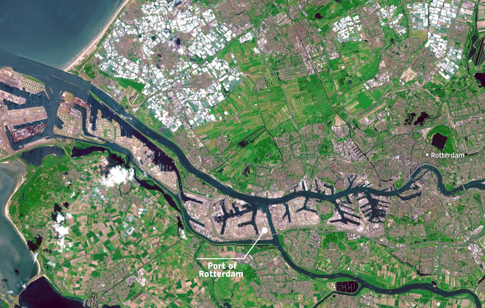
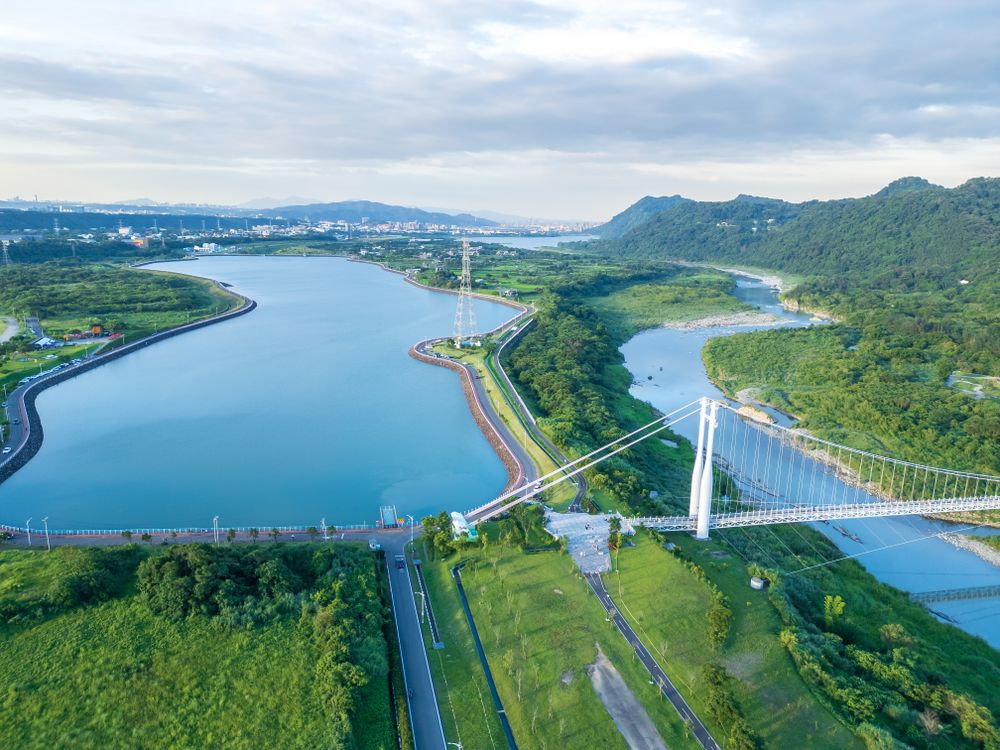
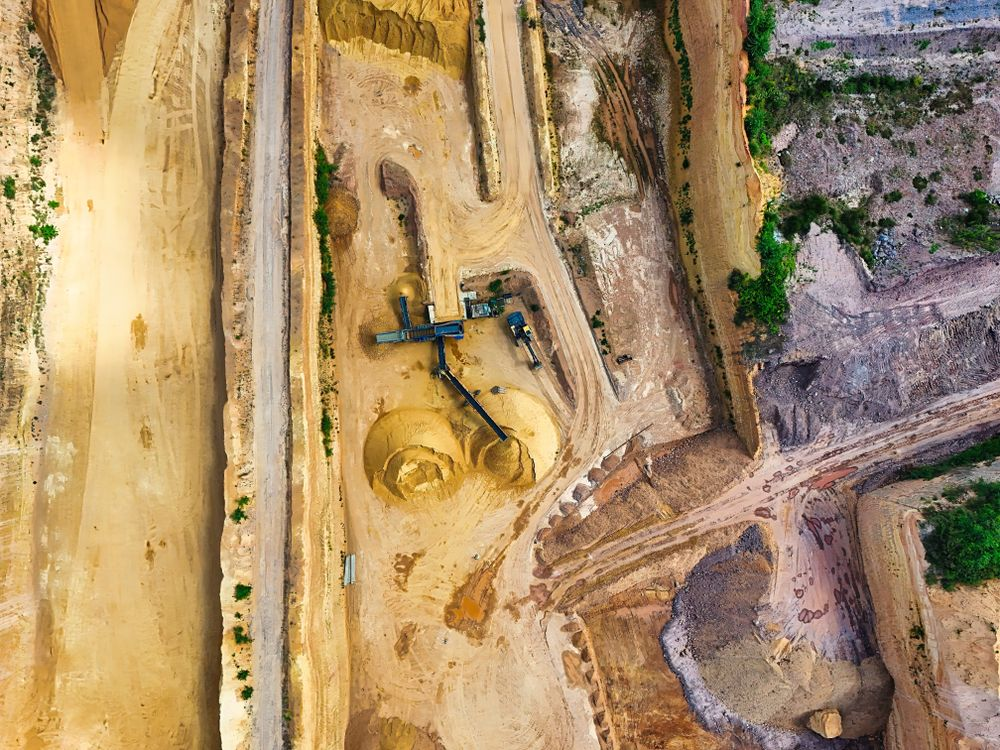
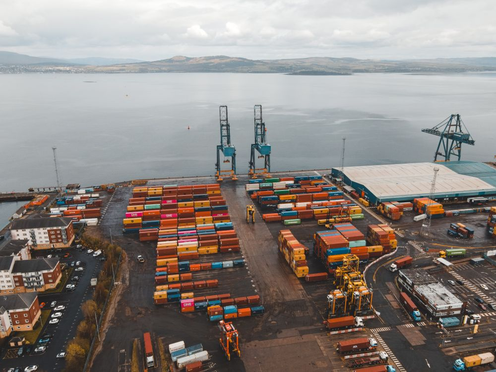
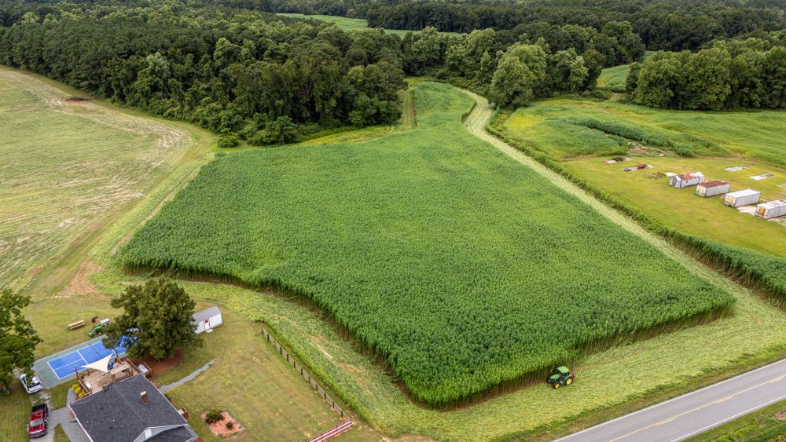
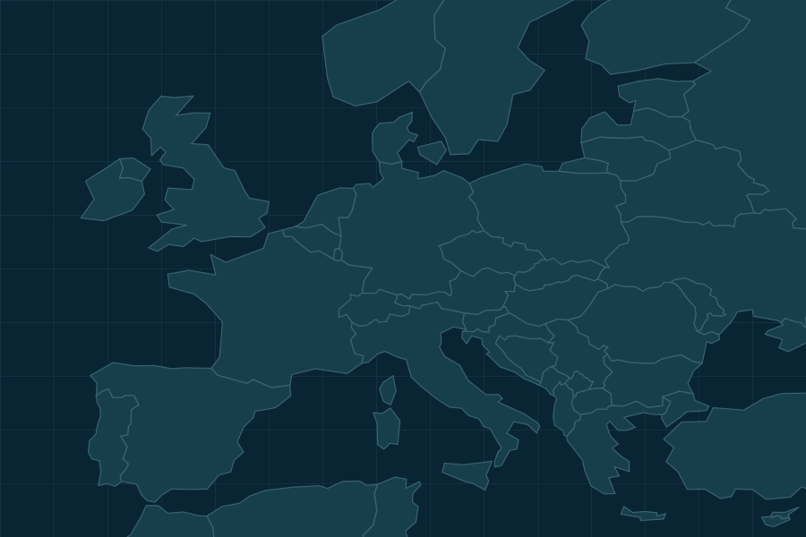
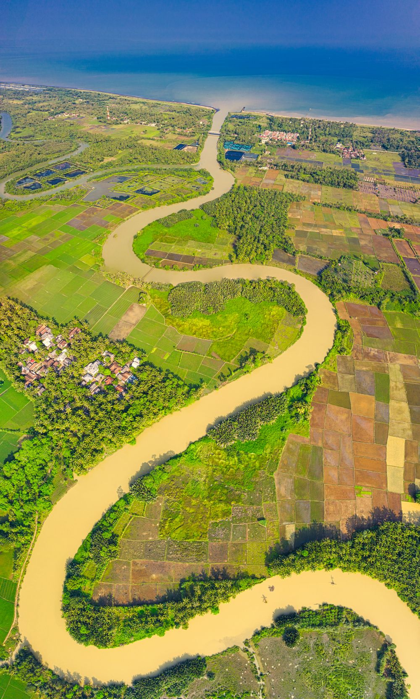

Warunki w regionie dostawcy wymagają uwagi.
INTELIGENCJA DLA ŁAŃCUCHÓW DOSTAW
Wyprzedzaj
zakłócenia.
Od sygnałów ze świata
do decyzji operacyjnych.
Tworzymy OrbitOps, by łączyć dane satelitarne, informacje środowiskowe i dane Twojej firmy. Chcemy pomagać wcześniej dostrzegać ryzyka, rozumieć ich wpływ na dostawy i wybierać dalsze działania.
WCZEŚNIEJSZA
ŚWIADOMOŚĆ RYZYKAWIĘKSZA KONTROLA
NAD KONTEKSTEMSZYBSZE PRZEJŚCIE
OD SYGNAŁU DO DZIAŁANIA
ŚWIADOMOŚĆ RYZYKAWIĘKSZA KONTROLA
NAD KONTEKSTEMSZYBSZE PRZEJŚCIE
OD SYGNAŁU DO DZIAŁANIA
OrbitOps w rozwoju
OBSERWACJA ZIEMIDAYLIGHT
Region obserwacji

PRZYKŁAD SYGNAŁUPrognoza intensywnych opadów
w regionie dostawcy
w regionie dostawcy
Co może to oznaczać dla Twojej dostawy?
WykryjOceńRekomendujDziałaj
+
WIZUALIZACJA KONCEPCYJNAAnimacja 3D · dzienna Ziemia · przykład ilustracyjnyObserwacja Ziemi.Dzienny obraz. Szersza perspektywa.
OBSERWACJA KONTEKST DZIAŁANIESpójrz bliżej ↓
WYZWANIE
Świat się zmienia.
Twój kontekst też.
Zmiany pogody, dostępność zasobów i zakłócenia przepływów mogą wpływać na codzienne operacje. Warto zobaczyć, co dzieje się wokół lokalizacji istotnych dla Twojej firmy.
Połącz sygnał z dostawą


TWÓJ KONTEKST. KONKRETNA DECYZJA.
Co to oznacza
dla Twojej dostawy?
Sygnał w regionie dostawcy to dopiero początek. Sprawdź, jak może przełożyć się na sytuację Twojej firmy.
PRZYKŁAD ILUSTRACYJNY Fikcyjne dane i lokalizacje
REGION / DOSTAWCA → FABRYKA
Prognoza opadów w regionie dostawcy.
PROGNOZA · OPADY
Dostawa do sprawdzenia
Dostawca AMagazyn i rampy
Twoja fabrykaZakład produkcyjny
Dostawca Fabryka Relacja dostawy Prognoza opadów
Przeciągnij model, aby zmienić widok.
MODEL POGLĄDOWY · NIE JEST MAPĄ BIEŻĄCYCH ZAGROŻEŃ↗ N
PRZYKŁAD / DOSTAWY01—03
CO CHCESZ SPRAWDZIĆ?
Potwierdź gotowość dostawcy
Możliwe działania · przykład, bez wysyłania zgłoszeń.Zapytaj, czy towar jest gotowy do odbioru i czy termin wymaga aktualizacji.
i
Prognoza, obserwacja terenu i wniosek o wpływie to różne informacje. Łączymy je z kontekstem firmy.
Lokalizacja dostawcy łączy sygnał z Twoją firmą.
Sprawdź możliwe działania, zanim podejmiesz decyzję.
ROZWIĄZANIE
Od sygnałów ze świata
do decyzji biznesowych.
Łączymy perspektywę obserwacji Ziemi z pogodą i kontekstem operacyjnym. Rozwijamy rozwiązanie, które ma pomagać oceniać możliwy wpływ ryzyka i wskazywać dalsze kroki.
Zobacz, jak to działaObserwacje ZiemiPogoda i środowiskoDane Twojej firmy
Ocena możliwego wpływu
Działania do rozważenia
Kontekst Twoich dostaw
03 / PEŁNIEJSZY OBRAZ
Trzy perspektywy.
Jeden kontekst.
Rozwijamy rozwiązanie, które ma łączyć informacje o świecie z tym, co ma znaczenie dla Twoich operacji.
OBSERWACJA / DZIEŃRegion Rotterdamu
Zmodyfikowane dane Copernicus Sentinel (2025).
Co widać w terenie?
Rzeczywisty obraz lokalizacji i jej otoczenia.
Co może się zmienić?
Pogoda i środowisko pomagają oceniać możliwy rozwój sytuacji.
Co to znaczy dla firmy?
Dane o dostawcach i zasobach pozwalają wskazać zależności do sprawdzenia.
OD DANYCH DO KONTEKSTU
Obraz pokazuje teren. Dopiero połączenie źródeł pomaga ocenić możliwy wpływ na dostawę.
Zdjęcie ilustruje rodzaj źródła. Model firmy i scenariusz opadów powyżej są fikcyjne.
ZASTOSOWANIA
Stworzone do rzeczywistych
wyzwań operacyjnych.
Rozwijamy OrbitOps z myślą o firmach, które chcą lepiej rozumieć ryzyka w swoim otoczeniu.
Ryzyka pogodowe
Jak warunki w regionie dostawcy mogą wpłynąć na ciągłość dostaw?
PorozmawiajmyZasoby i surowce
Które zasoby i lokalizacje warto objąć dodatkową uwagą?
PorozmawiajmyTransport i infrastruktura
Gdzie pojawiają się sygnały możliwych zakłóceń przepływu?
Porozmawiajmy
Środowisko i teren
Jak zmienia się otoczenie lokalizacji ważnych dla Twojej firmy?
PorozmawiajmyZdjęcia ilustrują obszary zastosowań; nie dokumentują zdarzeń z przykładowego scenariusza.
PODGLĄD PLATFORMY
Zobacz powiązania.
Wybierz następny krok.
Jeden widok dla sygnałów, dostawców i działań. Przełącz scenariusz, aby zobaczyć, jak zmienia się kontekst.
Interaktywna makieta · fikcyjne danePRZYKŁADOWA SIEĆ / EUROPA
SCENARIUSZE POGLĄDOWECo wymaga Twojej uwagi?
Mapa zależności6 lokalizacji

REGION DOSTAWCY AOpady wymagające uwagi
Lokalizacja Relacja dostawy Obszar sygnału
DOSTAWCA / LOKALIZACJAKONTEKSTSTATUS
A Dostawca A Rotterdam, NLPrognozowane opadyDo sprawdzenia
B Dostawca B Hamburg, DEWarunki transportuScenariusz demo
C Dostawca C Mediolan, ITPrognozowany upałScenariusz demo
D Dostawca D Brno, CZRelacja operacyjnaScenariusz demo
Lista przedstawia fikcyjną sieć dostaw. Nie zawiera danych rzeczywistych firm.
TWÓJ NASTĘPNY KROK
0 z 3 sprawdzonychOd informacji do działania.
Lista działa lokalnie w tej makiecie. Zaznaczenia nie są wysyłane ani zapisywane w systemach firmy.
6Lokalizacji w przykładzie
3Scenariusze ryzyka
1Relacja do sprawdzenia
TwojaDecyzja operacyjna
Chcesz porozmawiać o podobnym widoku dla swojej firmy?Porozmawiajmy
TECHNOLOGIA Z SZERSZĄ PERSPEKTYWĄBliżej realnych wyzwań.
05 / LUDZIE I KIERUNEK
Technologia z orbity.
Perspektywa biznesu.
Budujemy OrbitOps na styku technologii, danych i realnych wyzwań operacyjnych.
Łączymy doświadczenie w transformacji technologicznej i zarządzaniu inicjatywami z kompetencjami inżynierii danych. Naszym celem jest udostępnienie zaawansowanej analityki firmom, które nie mają własnego zespołu analitycznego.
Obecny etap: rozwój koncepcji i rozwiązania
SKONTAKTUJ SIĘ Z NAMI
Poznajmy wyzwania
Twojej firmy.
Opowiedz nam, co ma znaczenie dla Twoich dostaw i operacji. Przygotuj wiadomość — porozmawiajmy o możliwych scenariuszach współpracy.

Bliżej Twojej decyzji.
NAPISZ BEZPOŚREDNIOkontakt@orbitops.eu
Od czego możemy zacząć?
Od rozmowy o Twoich wyzwaniach i wyboru jednego przypadku do wspólnego przeanalizowania.
Jakie informacje warto opisać?
Rodzaj działalności, istotne lokalizacje i problem, który chcesz lepiej zrozumieć. Na początek wystarczy krótki opis.
Czy zgłoszenie oznacza rozpoczęcie pilotażu?
Nie. To zaproszenie do rozmowy. Zakres i dostępność ewentualnego pilotażu ustalimy osobno.